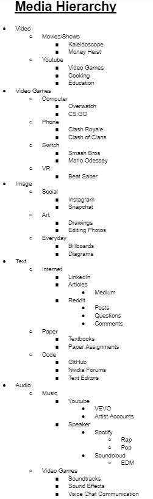

Theme 1
Reasons for Taking Course
A similar reason for taking this course I had with lots of other people was an emphasis to learn more about why certain forms of media are preferable over others. Since digitalization is a concept that our generation and future generations have to accept, it is good to know the trends or motivations behind the success of certain forms of media over others.
Theme 2
Mobile Game Prevalence
The most consistent theme across websites is the prevalence of mobile games in everyone's media hierarchy. For most sections, shows or sports vary but mobile games reappear. This just shows how important mobile devices are when it comes to passing time in our day and age. This is likely due to the convenience of phones as they can be used in almost every scenario since these games can be turned on and off quickly. As someone who plays mobile games, I don't find this surprising in the slightest.
Another consistent theme is that digital images (both still and video) have much larger sections than written word sections. This shows that digitalized forms of content are heavily preferred over written ones, which is something easily observable in everyday life. That said, the decline of usage in written word sections is something that some people might find uneasy, especially those who are hesitant to digitalization. This exact digitalization is mentioned in Hamlet on the Holodeck, as people believe digital forms of media are inferior to written ones, even if it isn't necessarily true.
Theme 4
Specific Entertainment
When it came to most categories, people leave a high-level overview of the category such as "articles" but when it comes to entertainment, people are very specific. Music, games, and television are topics that people give very specific examples about, which demonstrates that people are more aware and can talk in more detail about things that they are passionate about. People are inclined to share more in hopes that others might share similar interests, or are just excited to talk about forms of media that they enjoy.
I would revise my media hierarchy by mentioning things that I may not directly use but I also see in everyday life (e.g. billboards, art). Splitting games based on console is another breakdown that I would implement since I can go more into specifics after getting inspiration from other websites. I can also expand on digital text forms by talking about text editors when it comes to programming.
Overall, most of the hierarchy changes come from adding rather than removing. I believe that my categories are pretty clearly defined but I can add examples and go more into specifics for categories that I not only like, but use frequently. It is important to realize forms of media that help in everyday life, even if they aren't directly entertainment related.
